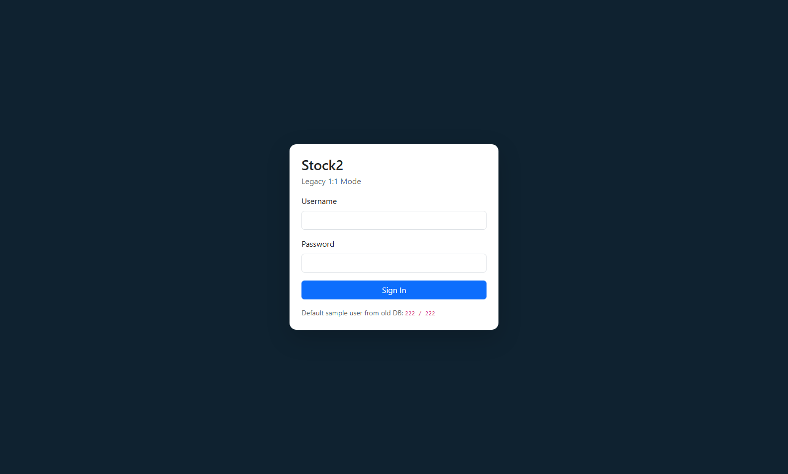
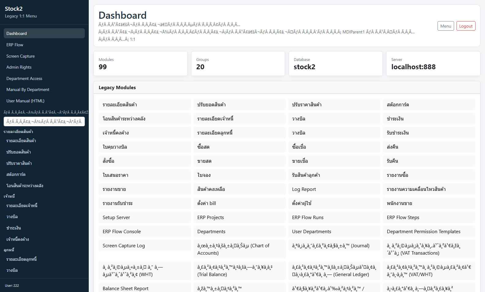
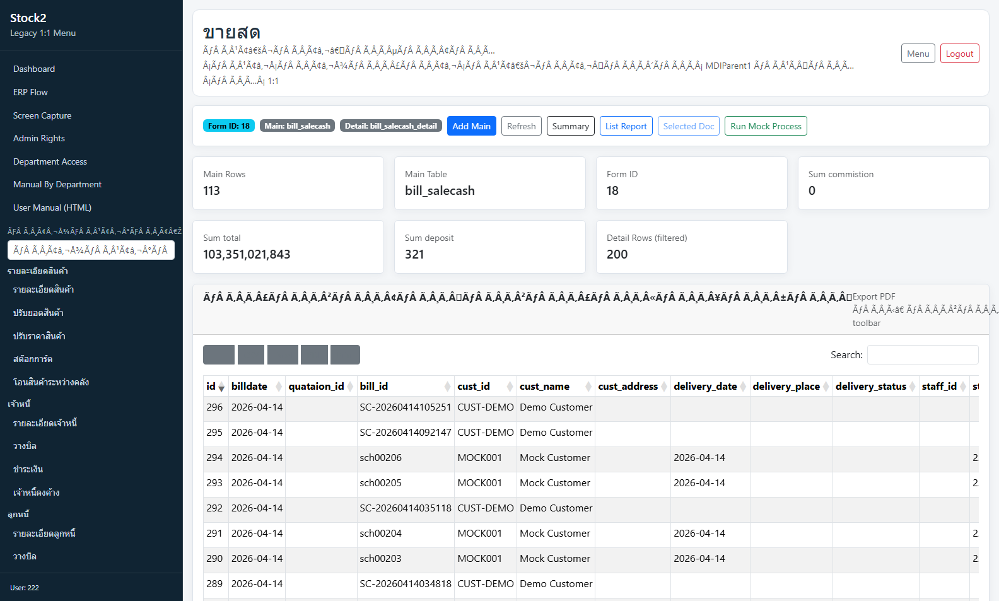
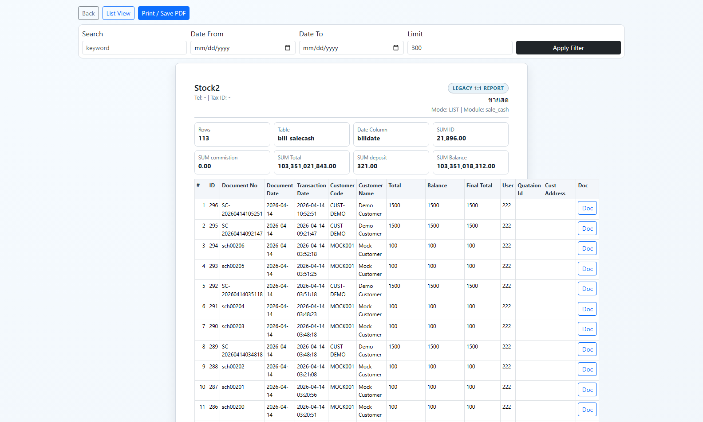
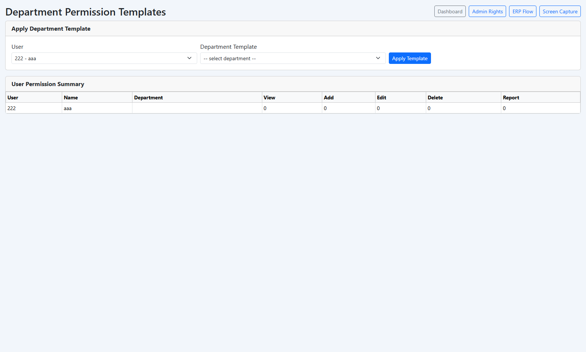
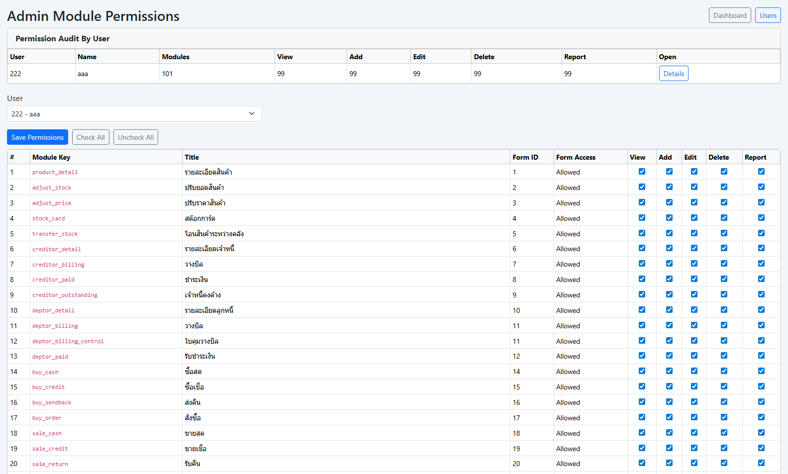
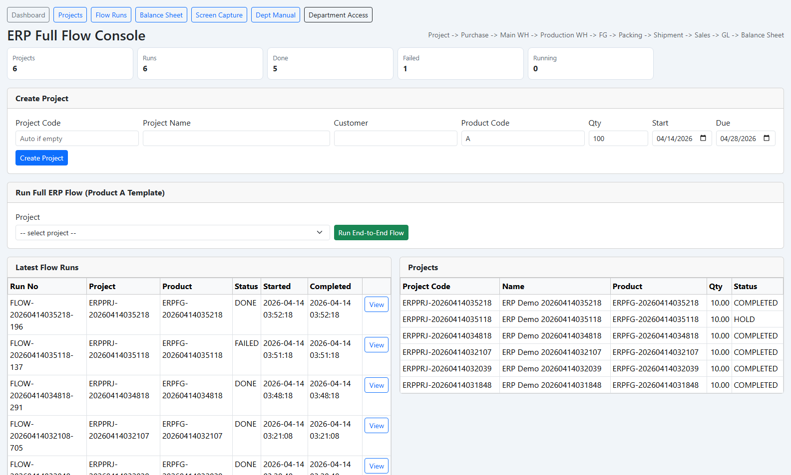
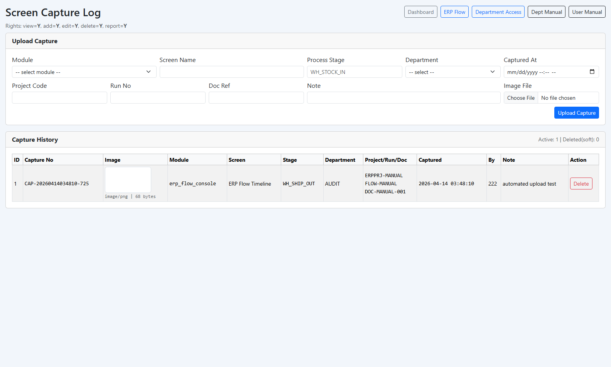
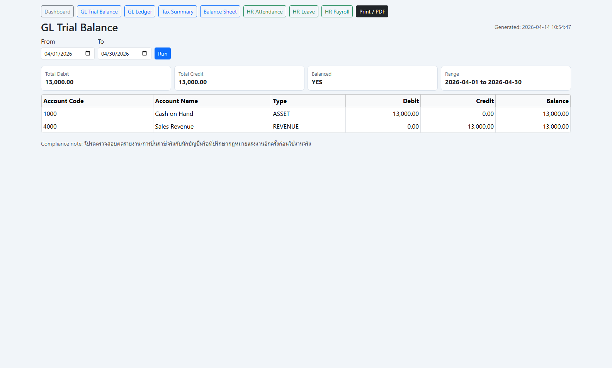

เอกสารฉบับนี้จัดทำจากการทดสอบระบบจริงที่ http://localhost:888/stock2/ พร้อมภาพหน้าจอ Web GUI จริง
วันที่ทดสอบ: 14 April 2026
ผู้ใช้ทดสอบ: 222 / 222
โฟลเดอร์ภาพ: docs/manual_images
ทดสอบผ่านสคริปต์ระบบ (Smoke Tests) และหน้า Web GUI หลัก
scripts/smoke_test_stock2.ps1scripts/gl_hr_smoke_test.ps1scripts/mfg_suite_smoke_test.ps1http://localhost:888/stock2/Username และ Password ที่ได้รับสิทธิ์ใช้งาน?page=module&module=... ตามโมดูลที่ต้องการบัญชีตัวอย่างจากฐานข้อมูลเดิม: 222 / 222
ใช้ยืนยันตัวตนก่อนเข้าระบบ ถ้าข้อมูลไม่ถูกต้องจะเข้า Dashboard ไม่ได้

เป็นหน้าสรุปภาพรวมระบบและจุดเริ่มต้นก่อนเข้าโมดูลเฉพาะงาน

เป็นหน้าจอทำงานหลักสำหรับจัดการข้อมูลแบบ CRUD (Add / Edit / Delete / Search / Export)
Add Main สำหรับเพิ่มข้อมูลหัวเอกสารRefresh โหลดข้อมูลใหม่
ใช้ดูรายงานรายการเอกสารในรูปแบบที่พิมพ์หรือส่งออกได้

ใช้กำหนด/ตรวจสอบสิทธิ์ตามแผนก ว่าแต่ละแผนกเข้าถึงหน้าจอไหนได้บ้าง

ใช้บริหารสิทธิ์รายผู้ใช้ เช่น View / Add / Edit / Delete / Report ตามโมดูล

ใช้ดูและทดสอบ flow ทางธุรกิจแบบ end-to-end ระหว่างโมดูล

ใช้อัปโหลดรูปหลักฐานหน้าจอการทำงาน พร้อม metadata (module/stage/department/doc ref)

หน้ารายงานสายบัญชี/การเงิน สำหรับตรวจสอบผลรวมเดบิตเครดิตตามช่วงเวลา

Department Access / Admin Access (เฉพาะผู้ดูแล)sale_cash เพื่อทำ CRUD เอกสารreport.php เพื่อตรวจผลรายงานcapture_screen.php และอัปโหลดภาพพร้อมหมายเหตุuser_access / user_module_accessหมายเหตุ: สิทธิ์แต่ละบัญชีอาจเห็นเมนูไม่เหมือนกัน